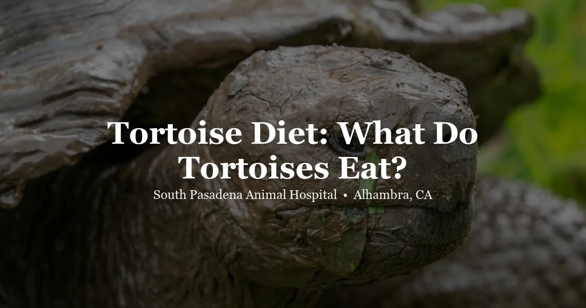

May 5, 2026 · 7 min read
What Do Tortoises Eat? Complete Tortoise Diet Guide

Tortoise diet is one of the most misunderstood topics in reptile keeping. The "fruits and vegetables" mental image many owners bring from feeding other pets does not map onto what most tortoises actually eat in the wild — and feeding the wrong diet consistently leads to very real health consequences over a tortoise's potentially decades-long life.
Here's what the most commonly kept tortoise species actually need, what to avoid, and how to supplement correctly. We see tortoises regularly at our Alhambra clinic, and diet-related illness is one of the most common things we address.
First: Diet Varies by Species
This cannot be overstated. The most commonly kept species in Southern California have different natural diets:
- Sulcata (African spurred tortoise): Arid grassland species; diet in the wild is almost entirely dry grasses and hay. Very high fiber, very low protein, very low moisture, very low fruit.
- Russian tortoise (Horsfield's tortoise): Arid Central Asian steppes; grasses, weeds, and leafy plants. Minimal fruit. Surprisingly tolerant of drought conditions.
- Hermann's tortoise: Mediterranean scrubland; leafy weeds, grasses, some flowers. Very little fruit in the wild.
- Greek tortoise (Spur-thighed tortoise): Similar to Hermann's; grasses and leafy plants, minimal fruit.
- Red-footed tortoise: Tropical South American species; significantly different from Mediterranean types. Can have more fruit, some protein, fallen leaves, and flowers as part of a varied diet.
- Desert tortoise (Gopherus agassizii): California's native species; grasses, wildflowers, prickly pear cactus pads. If you have a wild-caught or rescued desert tortoise, there are specific California DFW regulations about ownership.
Everything below focuses primarily on Mediterranean species (Russian, Hermann's, Greek) and sulcatas, as these are most commonly owned in Southern California.
What Mediterranean and Sulcata Tortoises Should Eat
Grasses and Hay (The Foundation)
This is the most important category and the most frequently neglected by pet tortoise owners. In their native habitat, Mediterranean tortoises spend most of their foraging time eating grasses and dry plant matter. Sulcatas eat almost exclusively dry grass and hay.
For pet tortoises:
- Timothy hay: Excellent; high fiber, appropriate calcium-to-phosphorus ratio
- Orchard grass hay: Good alternative or supplement to timothy
- Fresh grass (lawn clippings or planted grass): Very good, but ensure no pesticides or herbicides have been applied. Bermuda grass and various pasture grasses work well.
- Dry hay: Always available for sulcatas; Mediterranean tortoises can have slightly more variety
Hay and grasses should make up 50–80% of the diet for sulcatas and a significant portion for Mediterranean species.
Leafy Weeds and Plants
These should form the majority of what isn't grass/hay:
- Dandelion (leaves, flowers, stems): Nutritionally excellent; most tortoises love it
- Plantain (Plantago species): Wild weed, widely available; excellent
- Hibiscus (leaves and flowers): Very well accepted; nutritious
- Mulberry leaves: Good
- Grape leaves: Acceptable in small amounts
- Clover: Good in moderate amounts
- Succulents (Opuntia cactus pads): Excellent for desert species; the pads are high in moisture and low in oxalates
Dark Leafy Greens (as a supplement)
- Collard greens, mustard greens, turnip greens, endive, escarole — all acceptable
- Romaine and other lettuces — mostly water, minimal nutrition; use occasionally
- Kale — acceptable in small amounts; goitrogenic in large quantities
What to Avoid
Fruit (for Mediterranean species and sulcatas)
This is the most common dietary mistake we see. Fruit is high in sugar, promotes fermentation in the tortoise gut (Mediterranean tortoises have a different GI microbiome than tropical frugivores), and can cause chronic diarrhea and dysbiosis. A tortoise may accept and appear to enjoy fruit readily — but this doesn't mean it's appropriate. For sulcatas and Mediterranean species: essentially no fruit. For red-footed tortoises: some fruit is acceptable and appropriate.
High-Protein Foods
Cat food, dog food, meat, insects, and beans — all inappropriate for tortoises. Unlike red-eared sliders or bearded dragons, tortoises are strict herbivores, and excess dietary protein causes serious kidney damage and gout over time. This is a slow process that often isn't detected until the damage is significant.
Spinach, Beet Greens, Chard
High in oxalates, which bind calcium and can contribute to bladder stones and kidney problems. Fine occasionally, but not as a dietary staple.
Toxic Plants
- Avocado — toxic to tortoises
- Rhubarb — toxic (contains oxalic acid at very high concentrations)
- Tomatoes, peppers, eggplant — Solanaceae family; toxic to most tortoise species
- Daffodils, azaleas, rhododendrons, foxglove, and other ornamental garden plants — many are toxic
- Mushrooms — most wild mushrooms should be avoided
Supplementation
Even a well-varied diet benefits from supplementation:
- Calcium carbonate powder (without D3): Sprinkle on food 3–5 times per week. Calcium is critical for shell development and bone health.
- Cuttlebone in the enclosure: Tortoises will gnaw on it as needed. An excellent passive calcium source.
- Vitamin D3: If tortoise has adequate UVB exposure and outdoor time, additional D3 supplementation may not be needed. If kept primarily indoors with artificial UVB, supplement 1–2 times per week. Do not over-supplement D3 — it's fat-soluble and can accumulate.
Water
Tortoises, particularly Mediterranean and sulcata species, are adapted to arid environments and obtain much of their hydration from food. However, a shallow water dish should always be available. Many tortoises drink after soaking, and soaking in shallow warm water 2–3 times weekly is good practice, particularly for hatchlings and during dry Southern California summers. Tortoises also often defecate during soaks, which keeps the enclosure cleaner.
Signs of a Diet Problem
Diet-related health problems often develop slowly but have clear signs:
- Pyramiding (raised, pyramid-shaped scutes): Common in sulcatas kept on wet, low-fiber diets with excess protein. May also involve humidity issues, but diet plays a significant role.
- Soft shell: Calcium/D3 deficiency
- Bladder stones or sludge: Often related to excess oxalates, insufficient hydration, or wrong diet
- Gout: Uric acid deposits in joints or organs from excess protein
- Persistent loose stools or diarrhea: Often from too much fruit, high-moisture foods, or wrong diet for the species
If you're concerned about your tortoise's diet or health, a wellness exam at our clinic is a good starting point. We can review what you're feeding and help you optimize for your specific species. Call (626) 441-1314 or check our pricing page.
Frequently Asked Questions
What do tortoises eat?
Most commonly kept tortoises (sulcata, Russian, Hermann's, Greek) need grasses, hay, and leafy weeds like dandelion and plantain as the foundation of their diet. Mediterranean species and sulcatas should have little to no fruit. Red-footed tortoises can have more variety including some fruit.
Can tortoises eat fruit?
For Mediterranean species and sulcatas: essentially no fruit. Fruit ferments in their digestive system and can cause chronic GI problems. For red-footed and yellow-footed tortoises (tropical species): some fruit is appropriate and natural.
Can tortoises eat lettuce?
Romaine and red-leaf lettuce can be offered occasionally but are mostly water and low in nutrition. Dark leafy greens like dandelion, collard greens, endive, and mustard greens are far more nutritious. Never feed iceberg lettuce as a staple.
What foods are toxic to tortoises?
Avocado, rhubarb, tomatoes, peppers, eggplant (Solanaceae family), many ornamental plants (daffodils, azaleas, rhododendrons), and high-protein foods (meat, cat food, dog food) are all inappropriate or toxic. Protein causes long-term kidney damage in herbivorous tortoise species.
Do tortoises need calcium supplements?
Yes. Calcium powder (without D3) on food 3–5 times weekly, plus a cuttlebone in the enclosure. Adequate UVB light allows natural vitamin D3 synthesis for calcium absorption.
Where can I find a tortoise vet in the San Gabriel Valley?
South Pasadena Animal Hospital in Alhambra sees tortoises and other reptiles regularly. Visit our tortoise vet page for more details, or call (626) 441-1314 to schedule an exam.